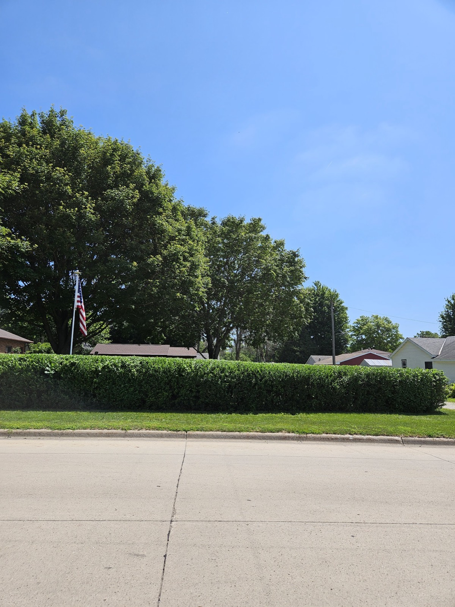

Mason City, Iowa
The neighbors you call for the yard, the house, and the haul-away.
Ana & Franklyn handle landscaping and lawn care, cleaning, and the odd jobs in between — hedge trimming, mulching, spring and fall clean-ups, and runs to the landfill. One reliable team for the whole list.

Why neighbors keep calling
One call, the whole list
Yard work, cleaning and the in-between jobs — handled by the same trusted team.
Quick to respond
Reviewers say a text gets a fast, clear reply — and the job gets done right.
Built on 36 five-star reviews
A 5.0 rating across 36 reviews from Mason City homeowners and businesses.
What we do
Lawn & Landscaping
Mowing, trimming, mulching and landscaping projects to keep the yard looking its best.
Hedge Trimming & Clean-Ups
Hedge and shrub trimming plus spring and fall clean-ups that reset the whole property.
Cleaning Services
Residential and commercial cleaning, plus rental move in/out — weekly, monthly or one-time.
Haul-Away & Odd Jobs
Trash removal and landfill runs with boxes or large items — the help that's hard to find.
"Franklyn responded quickly and trimmed [my hedge] to my satisfaction at a very reasonable price. This business has the very best equipment available to handle a variety of landscaping projects."
James Fingalsen · Google review
Find us
2348 20th St SW, Mason City, IA 50401
Get directionsServing Mason City & the surrounding Cerro Gordo County area — residential and commercial.
Hours vary by season and route — give us a call or text and we'll set a time.
Call for hoursGive us a call
Yard, house, or the odd job no one else wants — Ana & Franklyn will take care of it.